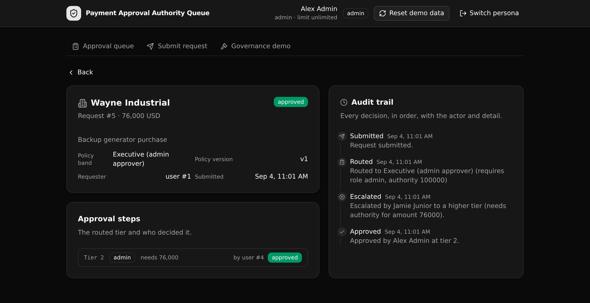

A governed payments approval backend where routing, per approver authority limits, and segregation of duties are enforced at the API layer, not in the frontend.

This is the governed backend that would sit under a plausible AI generated internal accounts payable tool. A generated frontend can render any button. The server still routes every request by amount to the right tier, checks every approval against the approver's own authority limit, and refuses a self approval. An over limit sign off or a self approval is rejected by the API even when driven directly, and every decision is logged with the rule version that applied.
The value for a technical evaluator is that the control lives in one readable, versioned API layer they can point at and approve. That is what makes an AI built approval tool safe to run in production. Access control is API layer RBAC (an auth table, tokens, and per endpoint preconditions), not row level security.
Paste this to an agent, or run the steps yourself.
# Clone and deploy this Xano template, then load the demo data. git clone https://github.com/xano-scratch/payment-approval-authority-queue cd payment-approval-authority-queue npm install npx xanots login # one time, authenticate with Xano npm run xano:deploy # deploys backend + frontend, prints the live URL # open the printed URL, click "Load demo data", sign in (password: password123)
Served under the pinned group slug, so the public prefix is /api:api.
| Method | Path | What it enforces |
|---|---|---|
| POST | /auth/login | Checks the password server side and mints an auth token |
| POST | /payments/submit | Routes by amount and pins the policy version to the trail |
| GET | /payments/queue | Returns only the requests within the caller's authority |
| GET | /payments/get/{id} | One request with its steps, trail, and the policy band |
| POST | /payments/approve | Checks role, authority limit, and segregation of duties |
| POST | /payments/reject | Records a rejection with a reason |
| POST | /payments/escalate | Raises a request past a limited approver |
| POST | /seed | Resets and loads the demo data |
Pick a requester, a limited approver, a senior approver, or an admin, and act as that role.
Enter a vendor and amount, and see the tier and authority the policy routes it to.
The requests within the caller's authority, scoped on the server.
The steps, the policy band and version, and the full audit trail.
Attempt an over limit approval and a self approval, and read the API rejection.
The generated app deploys to a short lived ephemeral environment, so any live link is temporary
and expires. The durable artifact is this repo. Clone it and run npm run xano:deploy
to get your own live backend and frontend with fresh links in about a minute.